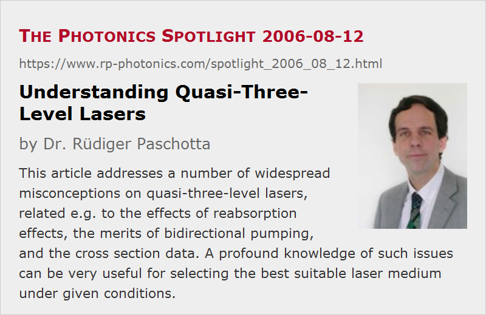

Understanding Quasi-Three-Level Lasers
Posted on 2006-08-12 as a part of the Photonics Spotlight (available as e-mail newsletter!)
Permanent link: https://www.rp-photonics.com/spotlight_2006_08_12.html
Author: Dr. Rüdiger Paschotta, RP Photonics Consulting GmbH
Abstract: This article addresses a number of widespread misconceptions on quasi-three-level lasers, related e.g. to the effects of reabsorption effects, the merits of bidirectional pumping, and the cross section data. A profound knowledge of such issues can be very useful for selecting the best suitable laser medium under given conditions.
Ref.: encyclopedia article on four-level and three-level gain media

There are a lot of misconceptions concerning quasi-three-level lasers, which have once found their way into the scientific and technical literature and do not only persist there, but also occasionally reappear in new publications. This article addresses some of those.
“Reabsorption from the lower laser level kills photons and thus reduces the efficiency of quasi-three-level lasers.” Actually, such reabsorption does remove photons, but their energy is recycled, as each absorbed photon leaves a laser ion in the upper laser level. The laser efficiency is only indirectly reduced: reabsorption raises the threshold pump power, i.e., it makes necessary a higher excitation level of the gain medium and thus increases the power losses via spontaneous emission. Also, in end-pumped lasers it doesn't allow to achieve (nearly) complete pump absorption, since an overly long laser crystal will introduce reabsorption toward the weakly pumped end.
“Bidirectional pumping of three-level gain media helps, since it avoids reabsorption at the weakly pumped end.” Not quite. Assuming a constant pump beam radius along the crystal length and neglecting thermal effects and possible quenching, it doesn't matter whether the pump power is all applied from one side or from both sides: neither the efficiency of pump absorption nor the contribution of each absorbed milliwatt to the laser gain depends on the pump direction. If reabsorption at a crystal end occurs for single-direction pumping, the crystal is too long (or the doping level is too high), and this doesn't change when the pump power is split into two beams, each having half the power. However, bidirectional pumping may make it easier to apply a higher pump power (thus also increasing the optimum crystal length), and the smoother distribution of excitation may reduce thermal and quenching effects.
“For modeling a quasi-three-level laser, I have to assume that absorption and emission cross sections at the laser wavelength are equal.” You may believe so when looking at Einstein's original simple model, but solid-state gain media exhibit non-degenerate Stark level manifolds with thermal population distributions. Under such circumstances, one should use effective cross sections which incorporate the thermal population distributions, and in general have different values for absorption and emission. (In most cases, the absorption cross section is smaller than the emission cross section.)
“Ytterbium-doped lasers are quasi-three-level lasers.” This is true for most, but not for all ytterbium-doped lasers. In those lasers operating on relatively long wavelengths – in particular, some fiber lasers operating at 1100 nm and beyond – there is hardly any reabsorption, and the behavior is in fact hardly different from that of a four-level laser. However, the long emission wavelength itself is usually enforced by reabsorption effects in situations with a low average excitation level of the ytterbium ions, and can thus be seen as a consequence of three-level behavior.
Associated with such misconceptions is a widespread uncomfortable feeling which probably prevents many companies from exploiting e.g. ytterbium-doped lasers and amplifiers, even in cases where they would be clearly superior. It can be very worthwhile to get informed about such issues in order to get a wider choice of suitable laser gain media without accepting a higher risk of failure.
This article is a posting of the Photonics Spotlight, authored by Dr. Rüdiger Paschotta. You may link to this page and cite it, because its location is permanent. See also the RP Photonics Encyclopedia.
Note that you can also receive the articles in the form of a newsletter or with an RSS feed.
Questions and Comments from Users
Here you can submit questions and comments. As far as they get accepted by the author, they will appear above this paragraph together with the author’s answer. The author will decide on acceptance based on certain criteria. Essentially, the issue must be of sufficiently broad interest.
Please do not enter personal data here; we would otherwise delete it soon. (See also our privacy declaration.) If you wish to receive personal feedback or consultancy from the author, please contact him e.g. via e-mail.
By submitting the information, you give your consent to the potential publication of your inputs on our website according to our rules. (If you later retract your consent, we will delete those inputs.) As your inputs are first reviewed by the author, they may be published with some delay.
|  |
If you like this page, please share the link with your friends and colleagues, e.g. via social media:
These sharing buttons are implemented in a privacy-friendly way!